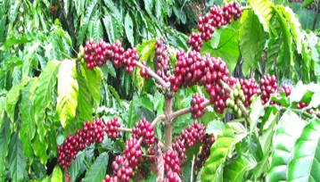
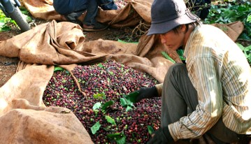

เวียดนาม


ส่งออกกาแฟได้เป็นอันดับ 3 ของโลก สำหรับประเทศไทยปลูกกาแฟโรบัสต้า ร้อยละ 98 โดยมากปลูกทางภาคใต้เช่น กระบี่ และชุมพร อีกประมาณร้อยละ 2 เป็นกาแฟอราบิก้าซึ่งปลูกมากตามดอยต่างๆ ทางภาคเหนือ กาแฟที่มีชื่อเสียงของไทยได้แก่ กาแฟดอยช้าง ซึ่งปลูกบนดอยช้าง จังหวัดเชียงราย ถือว่าเป็นกาแฟได้จากกระบวนการผลิตที่ได้มาตรฐานระดับสากล และรสชาติดีเทียบเคียงกับกาแฟที่มีชื่อเสียงของโลก